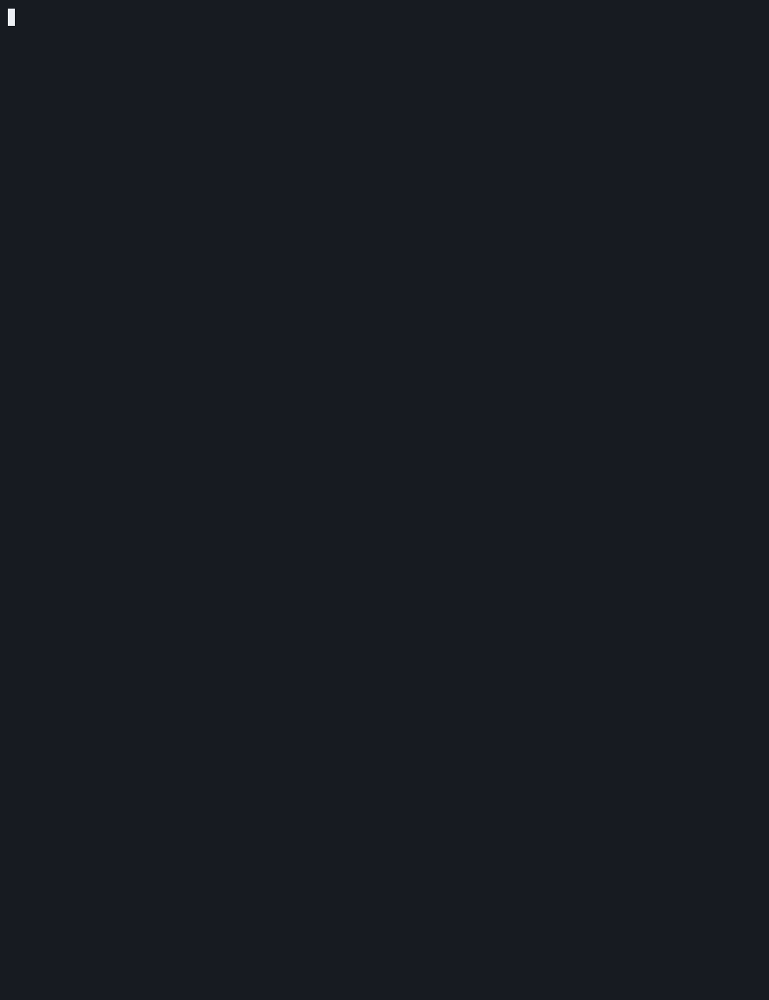

Write it down. Find it later.
notes is a small terminal tool for daily notes and to-dos. Every note is a plain Markdown file you own. Open to-dos follow you from day to day, and when the list gets long, Claude can sort it for you.
$ notes todo "renew passport" "call dentist"
That's the whole workflow for adding to-dos. No app, no account, no sync service required.
--- title: Daily 2026-09-23 date: 2026-09-23 tags: [daily] --- ## Work - [ ] fix checkout crash on Safari - [ ] prepare slides for Friday's demo - [x] review Maria's PR ## Personal - [ ] renew passport - [ ] call dentist - [ ] pay rent
notes writes to disk: a regular Markdown file. Open it in any editor, grep it, or sync it with iCloud.Get set up
Seven steps, about five minutes. Tick each one off as you go; your progress is saved in this browser.
-
git clone git@github.com:tobiasdossinger/toolbox.git cd toolbox
The repo is private. Ask Tobias for access. If you don't have a GitHub account, a read-only token works instead; the toolbox README has the steps.
-
./install.sh notes standup
It links
notesandstandupinto~/.local/bin, then asks a few questions:Sync with iCloud Drive? Say yes to share notes across your Macs. What's this notebook for? Work only, Personal only, or Both. Show open to-dos in every new terminal? Say yes for a reminder each time you open one. You can change all of these later.
-
notes todo "buy milk" "call mom" notes todo "reply to client email" --work
Quote each item.
notes todo buy milkwould add two items, "buy" and "milk". -
notes todos
This collects open items from every note, grouped by Work and Personal. Add
--workor--personalto filter. -
notes done milk # typo-tolerant match notes check # interactive checklist
Checked off the wrong one?
notes undone milkreopens it. -
standup
This shows what you checked off last time and everything still open. It gets useful from your second day, once there's a yesterday to report. How it works
-
notes todos --ai
Needs Claude Code installed and logged in. The first run takes a few seconds, and after that it's instant. More on this below.
How your notes stay organized
These all run on their own; there's nothing to set up.
[>] Open items follow you
The first time you use notes each day, it moves yesterday's open to-dos into today's note and marks the old ones - [>], so nothing gets left behind.
## Work and Personal
With "Both", every day gets a Personal section and weekdays also get a Work section. Weekends stay personal.
$ A reminder in every terminal
If you said yes during install, each new terminal opens with a short list of what's still open. It shows your standup summary instead if the standup tool is installed.
~ Typo-tolerant search
notes search, notes edit and notes done all find close matches, so "dentst" still finds "call dentist".
Your standup, already written
standup reads the daily notes that notes already keeps. There's nothing extra to track: what you checked off last time becomes your update, and everything still open is today's list.
- It knows what "yesterday" means
- On a Monday, it reports Friday's work as "Last done (Friday, …)", so the label never claims a day that isn't true. Days without a note are skipped.
- It takes weekends off
- On Saturday and Sunday there's no recap, just your open to-dos.
- Filter it for the meeting
standup --workleaves out your personal items, and--personaldoes the opposite.- It shows up in every new terminal
- With the terminal reminder on,
notesshows your standup instead of a plain list. Nothing to configure.
$ standup Standup — 2026-09-23 Yesterday (Tuesday, 2026-09-22) Work (3) ✓ ship the new onboarding flow ✓ review Maria's PR for the payments refactor ✓ fix flaky login test in CI Personal (1) ✓ book dentist appointment Today — open (5) Work (3) ☐ prepare slides for Friday's sprint demo ☐ reply to client email about contract renewal ☐ hotfix expired SSL cert on staging Personal (2) ☐ renew passport ☐ pay rent
When the list gets long, let Claude sort it
Add --ai to notes todos or notes check. Claude files each open item under a topic like Finance, Health or Meetings, rates how urgent it is, and puts the most urgent items at the top of each group.
- file tax return, deadline next weekurgent
- buy groceries for the weekendnormal
- someday: learn Spanishlow
Your files never change. Sorting only affects what you see, so done, carry-forward and everything else work exactly as before.
Results are saved per item, so only new to-dos trigger a call. Want a fresh sort? Run notes todos --ai --refresh. There's also Markdown output for sharing: notes todos --ai --md.

No surprise bills
AI sorting runs through your Claude subscription, so there's no API key to manage and nothing billed per call.
- Subscription only.
noteswon't call Claude unless Claude Code is logged in with a Claude plan. It also ignores any API key set in your shell, so a leftover key can't turn into a bill. - Hard limits. Before every call,
noteschecks a daily call limit and a monthly budget. When either runs out, you get the regular list and a note saying why. - Every call is logged. Run
notes aito see today's calls, this month's estimated usage and the latest calls. A sort of about 30 to-dos is estimated at roughly $0.03 at API prices, which counts toward your plan's usage limits rather than being charged.
| Setting | Default | What it limits |
|---|---|---|
| daily_calls | 20 | Calls to Claude per day. Set it to 0 to turn AI sorting off. |
| monthly_budget_usd | $2.00 | Estimated usage per calendar month |
| max_usd_per_call | $0.10 | Cap passed to each call |
| batch_size | 40 | To-dos sent per call |
| allow_api_billing | false | Whether an API key may be used |
notes ai --set daily_calls=10 monthly_budget_usd=1
Cheat sheet
Run notes -h for this list, or notes <command> -h for details on one command.
To-dos
- notes todo "text" [--work]
- Add one or more to-dos to today's note
- notes todos [--ai] [--md]
- List everything open, across all notes
- notes done <text>
- Check off the closest match
- notes undone <text>
- Reopen a checked-off item
- notes check [--ai]
- Tick items off in an interactive list
Notes
- notes today
- Open today's daily note in your editor
- notes new "Title"
- Start a new note
- notes search <text>
- Search titles and contents
- notes edit <text>
- Open the note that matches best
- notes list · notes tags
- Browse recent notes and the tags you use
standup
- standup
- Last workday's checked-off items plus everything open
- standup --work · --personal
- Only one section
Setup
- notes init
- Change what the notebook is for: Work, Personal or Both
- notes editor "code -w"
- Choose your editor. The default is nano (save with Ctrl+O, quit with Ctrl+X).
- notes ai
- AI usage and limits
- NOTES_DIR=…
- Keep your notes in a different folder. standup reads the same setting.